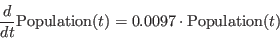

Runge Kutta
- Controls aspect of the adaptive Runge-Kutta equation solver, which
trade off performance and accuracy of the model.
- Note a first order explicit solver is the classic Jacobi method, which is the fastest,
but least accurate solver.
- The algorithm is adaptive, so the
step size will vary according to how stiff the system of equations
is.
- Specifying a minimum step size prevents the system from stalling,
at the expense of accuracy when the step size reaches that
minimum.
- Specifying a maximum step size is useful to ensure one has
sufficient data points for smooth plots.
- An iteration is the time between updates to plots, increasing the
number of solver steps per iteration decreases the overhead involved
in updating the display, at the expense of smoothness of the
plots. Screen refresh is the period between screen updates, in ms. If
an iteration takes less than this time, the screen refresh is postponed
until the time has expired. 100ms is fast enough for a smooth
animation of the simulation - increasing this value will improve
simulation performance at the cost of a jerky animation of the
simulation.
- Start time is the value of the system  variable when the
system is reset.
- Run until time can be used to pause the simulation ince t
reaches a certain value. Setting this to “Inf” causes the
simulation to run indefinitely, or until some arithmetic error
occurs.